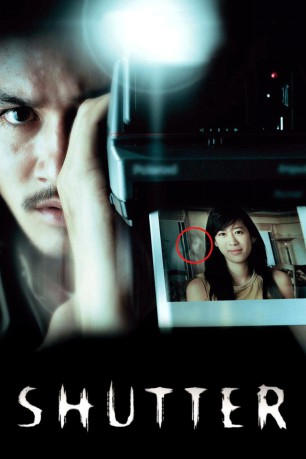

#3269 Shutter
 
 IMDB-Wertung: 7.1 / 10
IMDB-Wertung: 7.1 / 10  Metascore: 0
Metascore: 0 
Als Jane ihren angetrunkenen Freund Tun nach einer Hochzeitsfeier heimfährt, überrollt sie eine junge Frau, die plötzlich aus dem Nichts über die Straße rast. In Panik verleitet Tun Jane zur Fahrerflucht. Auch wenn dies die Beziehung stark belastet, der Alltag holt das Pärchen schnell wieder ein. Besonders Tun findet sich bald wieder in seinem Fotografenjob. Doch seine Bilder sind plötzlich durch bizarre Verzerrungen und grelle Lichter unbrauchbar. Und Jane wird immer häufiger von brutalen Albträumen geplagt, in denen ein gespenstisches Mädchen sie erbarmungslos verfolgt. Als auch Tuns Nchte von dieser Vision gestört werden, beginnen die beiden mit Nachforschungen über die vermeintliche Tote. Zurück am Unfallort erfahren sie, dass eine Leiche nie gefunden wurde...
Jahr: 2004
Dauer: 96 Minuten
FSK: 16
Land: Thailand Studio: Ascot Elite Home EntertainmentTonspuren:
Untertitel:
Auflösung: 1080p (1920x1080) Größe: 5601 MB
Genre: Thriller, Horror, Mystery
Regisseur: Banjong Pisanthanakun, Parkpoom Wongpoom
Drehbuch: Parkpoom Wongpoom, Banjong Pisanthanakun, Sophon Sakdaphisit
Soundtrack: Chatchai Pongprapaphan
Darsteller:
- Ananda Everingham als Tun
- Natthaweeranuch Thongmee als Jane
- Achita Sikamana als Natre
- Unnop Chanpaibool als Tonn
- Titikarn Tongprasearth als Jim
- Sivagorn Muttamara als Meng
- Chachchaya Chalemphol als Tonn's Wife
- Kachormsak Naruepatr als Tee
- Apichart Chusakul als Magazine Editor
- Binn Kitchachonpong als Asst. Magazine Editor
- Panitan Mavichak als Nuch
- Samruay Jaratjaroonpong als Man 1
- Jitlada Korsangvichal als Nurse 1
- Duangporn Sontikhan als Nurse 2
- Panu Puntoomsinchal als Groom
- Saifon Nanthawanchal als Bride
- Tanapon Chansming als Aum
- Thamonwan Srinatsomsuk als Toosie
- Watthanaporn Wannacome als Woman 1
- Natraya Rotthirawanit als Woman 2
- Sawai Poomring als Monk
- Twich Chombuatong als Novice
- Teranet Jongaramrungrueng als Disciple
- Vasana Chalakorn als Natre's mother
- Krai Kanchit als Natre's neighbor
- Manop Boonvipat als Doctor
- Suthiphong Bhibalkul als TV narrator
Datei: X:\HD-Eastern-Modern(N-Z)\Shutter (2004, FSK16, 1920x1080).mkv seit 25.02.2016
Festplatte: HD Eastern+Western
 Es gibt insgesamt 76 Filme in der Gruppe 'HD-Eastern-Modern(N-Z)'
Es gibt insgesamt 76 Filme in der Gruppe 'HD-Eastern-Modern(N-Z)'